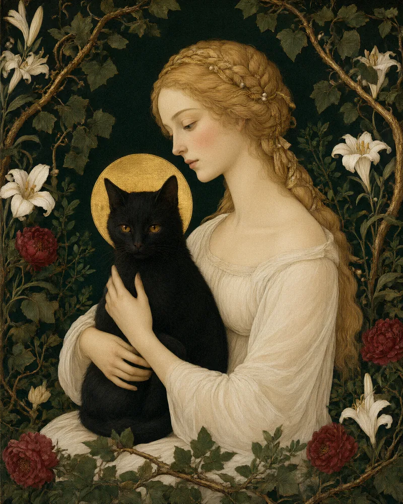
занять местокошка, которая живёт в тебе
Творческое исследование феминности по книге Марии-Луизы фон Франц «Кошка»: сказкотерапия, юнгианский анализ, арт-практика и талисман, который останется с вами.
набор открыт
01 — Лаборатория
междисциплинарное исследование женского опыта —
глубинная психология · искусство · миф
Феминность не существует в единственном числе.
Она складывается из образов, ролей, противоречий и личных историй.
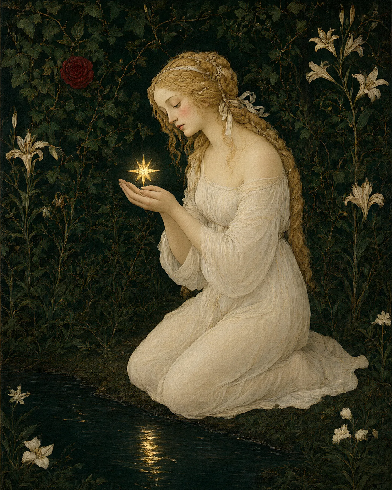
02 — Феминность
Между «будь сильной» и «будь мягкой» — целая жизнь, которую некуда положить. Мы собираем пространство, где её можно рассмотреть: без спешки, без оценок, без готовых ответов.
Здесь женское естество — отношения, телесность, призвание — изучают и исцеляют так, как работают с картиной: при хорошем свете и в тишине.
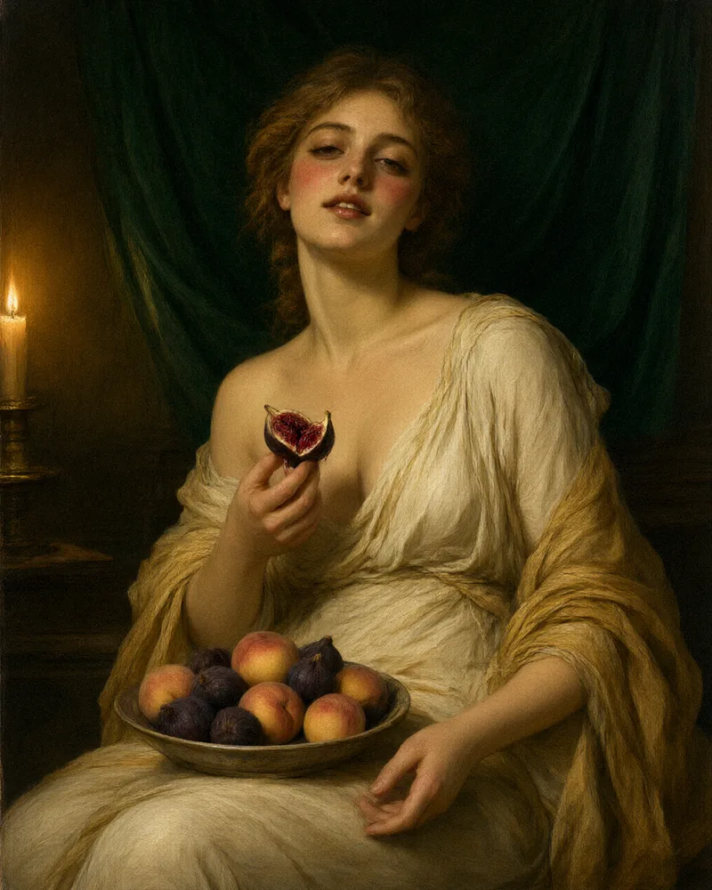
03 — Наша оптика
Психология × миф × искусство × личный опыт
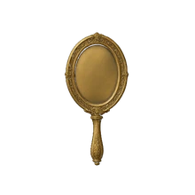
аналитический взгляд: тень, архетип, сон.
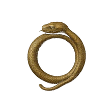
сюжеты, которые старше нас и живут в нас.
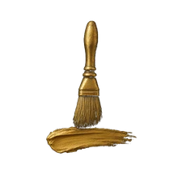
образ, краска, глина как язык бессознательного.
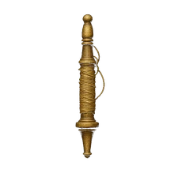
ваша история — главный источник.
Ни одна линза не видит целиком. Вместе — почти.
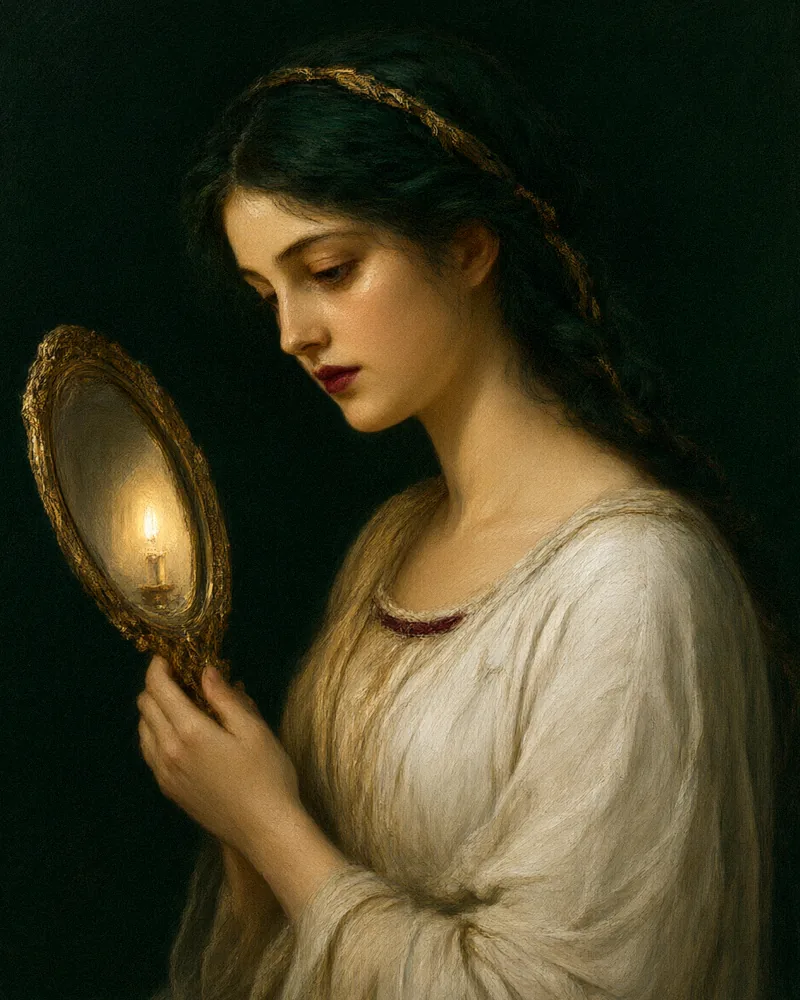
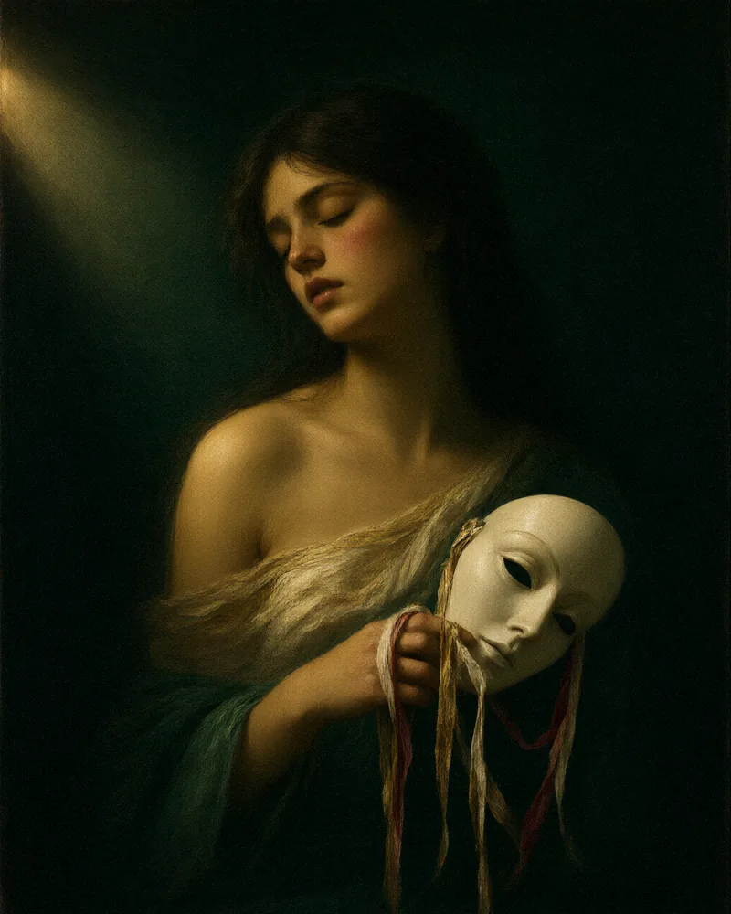
04 — Для кого
Здесь ничего не нужно доказывать. Можно просто быть.
05 — О нас
Две оптики, одна внимательность.
06 — Встречи
каждая встреча — отдельное полотно и отдельный сайт

занять местоТворческое исследование феминности по книге Марии-Луизы фон Франц «Кошка»: сказкотерапия, юнгианский анализ, арт-практика и талисман, который останется с вами.
набор открыт
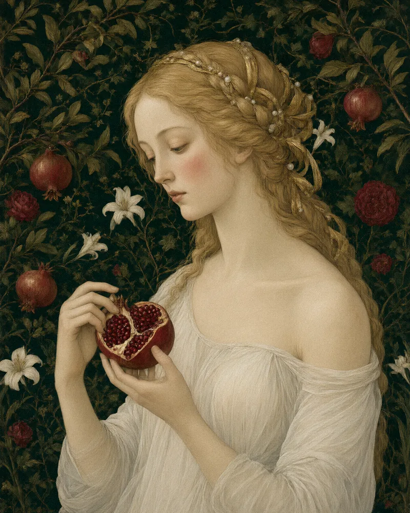
О границе, которая защищает, и о зёрнах под ней: гранат как образ кожи, вкуса и права сказать «нет» без вины.
в подготовке
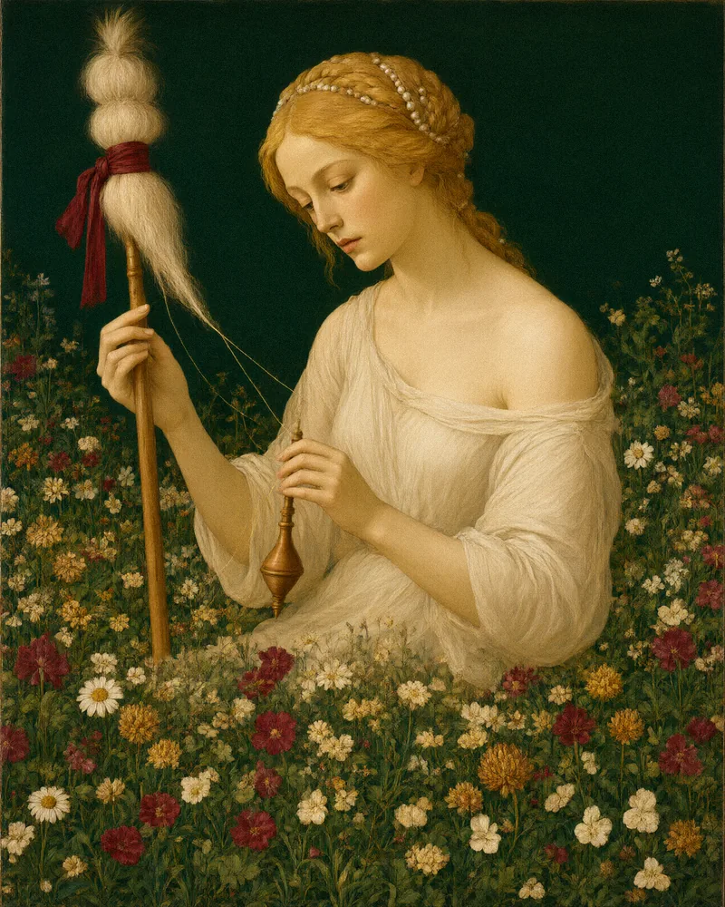
Род, ремесло, судьба: прядём собственную нить из обрывков чужих сюжетов и учимся держать её в своих руках.
в подготовке
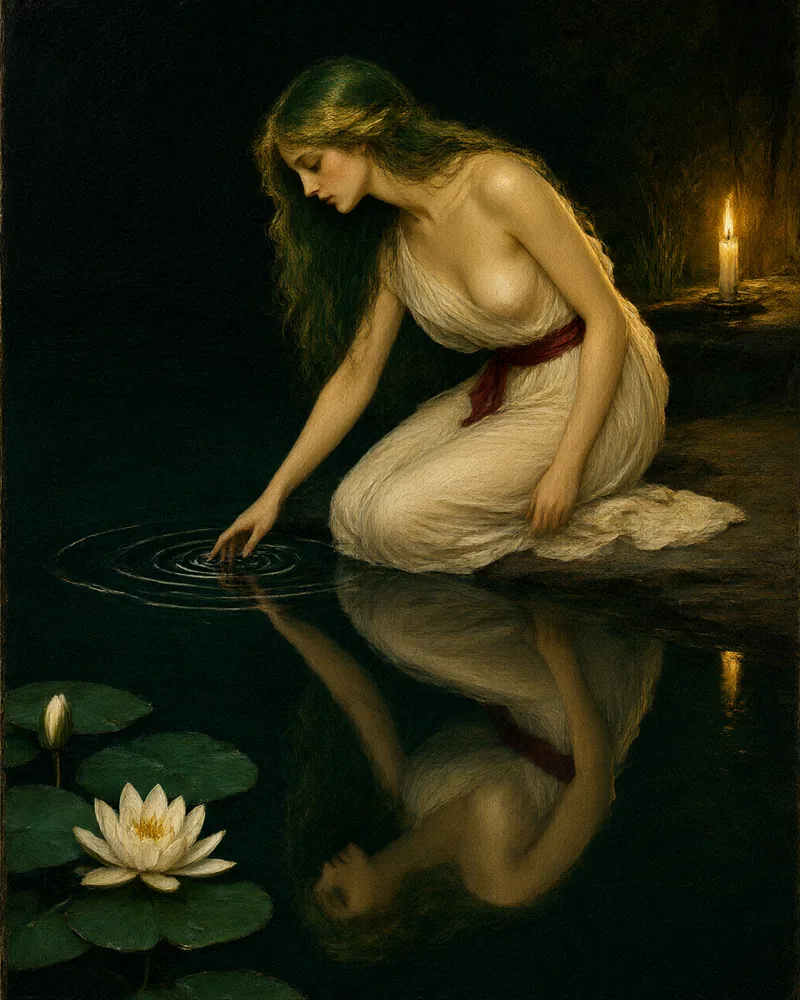
О том, что прячут даже от себя: вечерняя практика у воды — отражение, круги по воде и право быть невидимой для всех, кроме себя.
в подготовке
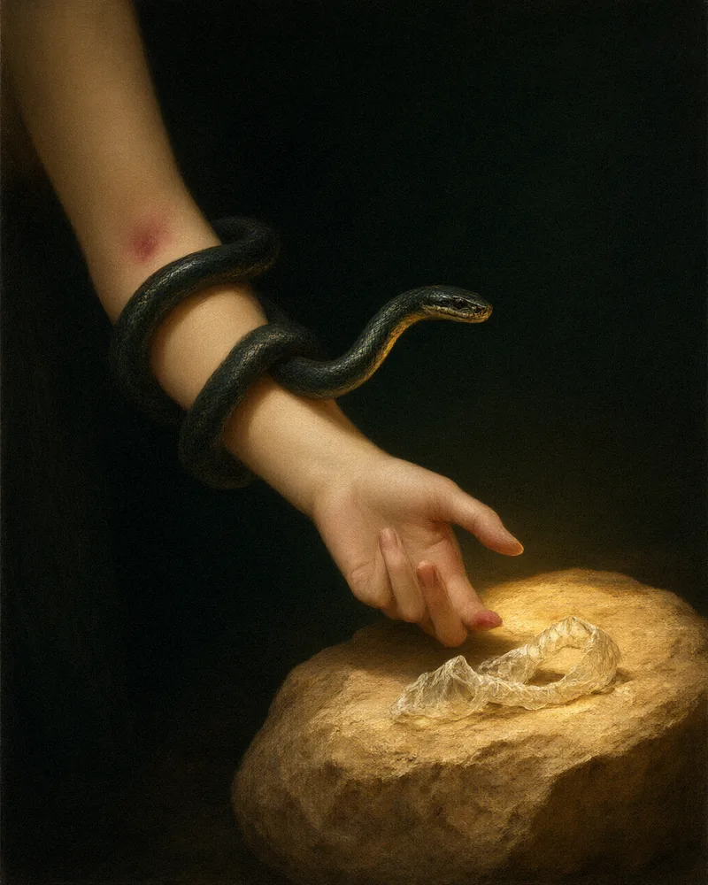
О том, что отжило, и о том, что растёт под ним: ритуал прощания со старой кожей — ролью, именем, обликом.
завершено · полотно снято с экспозиции
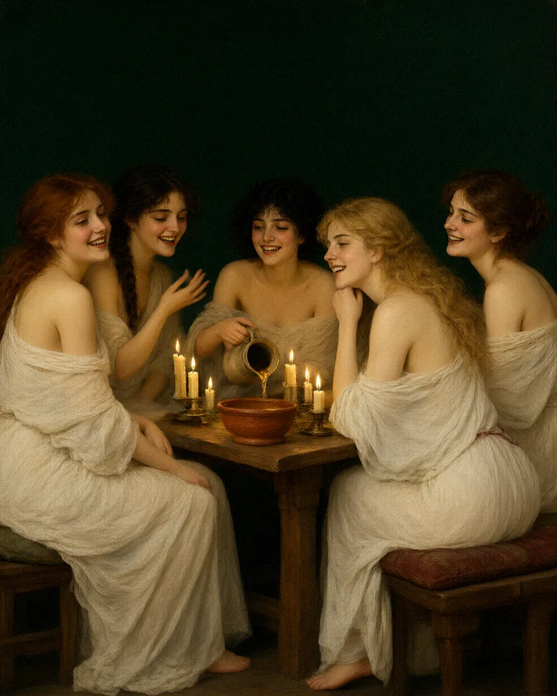
07 — Как это происходит
Основание — аналитическая психология, арт-терапия и сказкотерапия.
Всё остальное приносят сами участницы.
08 — Приглашение
Ближайшая встреча — «кошка, которая живёт в тебе».
А если вы ещё не готовы войти — оставьте письмо: раз в месяц мы пишем
одно тихое письмо о том, что исследуем.
без рассылок-продаж. только образы и даты встреч.
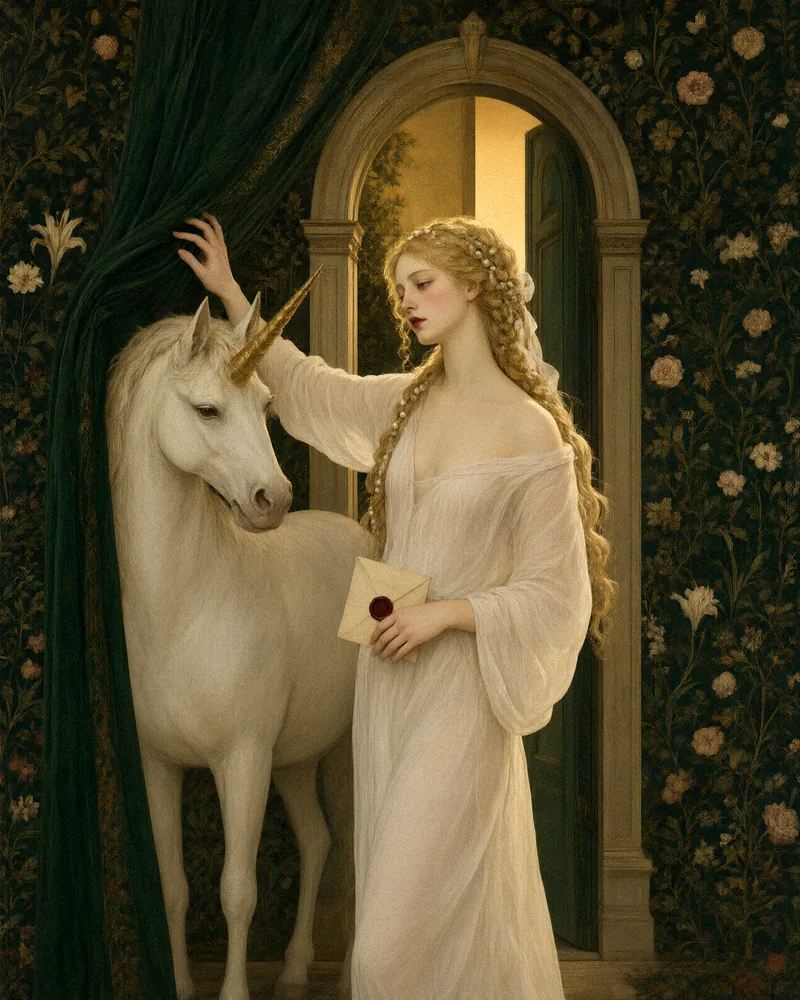